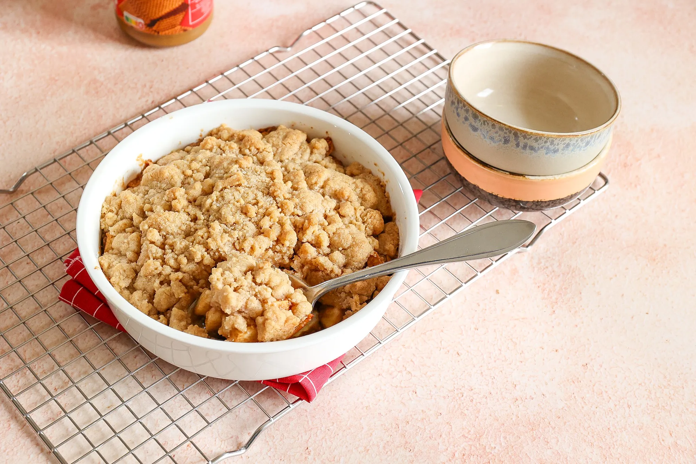

Appel kruimel

Ingredienten
Voor het appel mengsel
- 3 appels
- 3 tl speculoos
- 1/2 tl kaneel
Voor het deeg
- 100 gr bloem
- 50gr boter
- 50gr suiker
- 1/2 tl kaneel
Bereiding
- Verwarm de over voor op 180 graden.
- Meng alle ingrediënten voor het kruimeldeeg door elkaar.
-
Schil de appels en verwijder het klokhuis. Snijd de appels in blokjes.
-
Meng de appelblokjes met speculoos en kaneel. Schep dit in een ingevette
ovenschaal.
- Verdeel het kruimeldeeg over de appels.
- Bak 25 minuten in de oven.